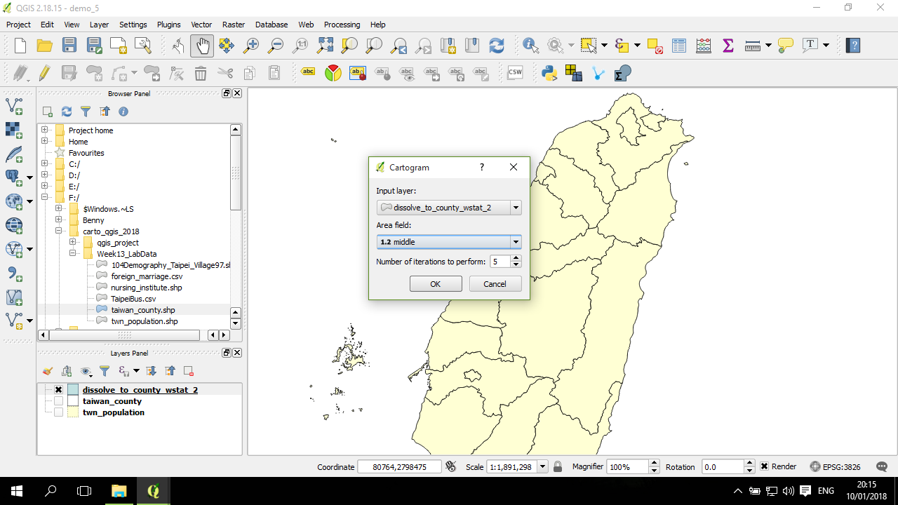

變形地圖 (cartogram)
一般來說，常見的地圖基本上是將地方區塊、位置等，依據地球表面所在的位置或相對位置，經過投影後繪製在地圖上。換言之一般情況下地圖中的變形是來自於將球面位置轉成平面位置過程 -- 投影而來。
不過，這裡說的變形地圖(cartogram)，是指為了將特定的統計量資料，例如人口結構、人口密度等，直接用畫面中的大小來進行呈現，而強制將面的形狀依據統計量的相對大小來進行變形，以調整面的大小面積。簡單來說，其結果所呈現的圖，是用大面積來反映高的數值，小面積來反映小的數值。
工具
在 QGIS 中，cartogram 的繪製可以透過一個套件 --- Cartogram 這套件來製作：

請先確認透過套件管理安裝完成。
資料
這裡將用的資料是台灣的縣市層級的人口資料，主要會用的是青壯年人口數：
這資料是從鄉鎮人口資料，經過 屬性計算 及 dissolve 而得。
繪製 cartogram
在安裝好套件後，透過 Vector-->Cartogram-->Create cartogram... 來開啟製作 cartogram 的視窗：

如果沒有安裝成功，在 Vector 底下不會有 Cartogram 選項。
這小視窗是製作 cartogram 的選項視窗，其中只有三個項目需要設定：第一個是輸入圖層(input layer)，選定上述所說的縣市圖層；第二個是調整面積的欄位，這裡是選擇 15-65人口數作示範；第三個是迭代次數，這是 cartogram 背後運作的基礎，預設是5：

這套件背後在計算過程中，會經過一定次數的迭代，而每一次迭代都會讓圖層的面發生一些變形，以讓面積更接近所設定的欄位。迭代次數越高，則結果變形的越嚴重，也越接近上述設定的欄位的值的相對大小。
Cartogram 計算完成，結果會產生一個圖層：
若有需要，可以進一步將這個圖層進行檔案輸出。
應用分層設色圖依據原來數值的分佈進行上色：
比較不同迭代次數設定
應用 平面地圖composer ，加入兩張地圖：
後面的設定主要參考這裡。
點選第一張地圖(左邊)，回到 QGIS 主界面，關閉不必要的圖層，留下 5次迭代的圖層：
更新後，左邊的圖層已將不必要的圖層關閉，留下5次迭代的變形圖：
再回到 composer 界面，確認選定右邊的地圖，按一下在右方的 update preview：

對左右兩張地圖分別加上文字說明：